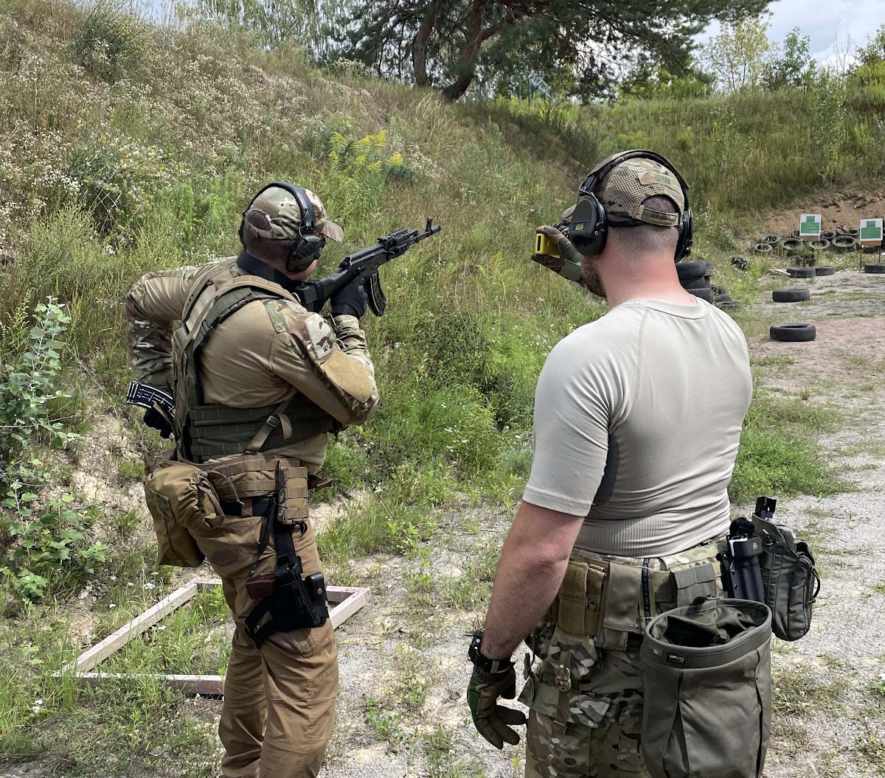
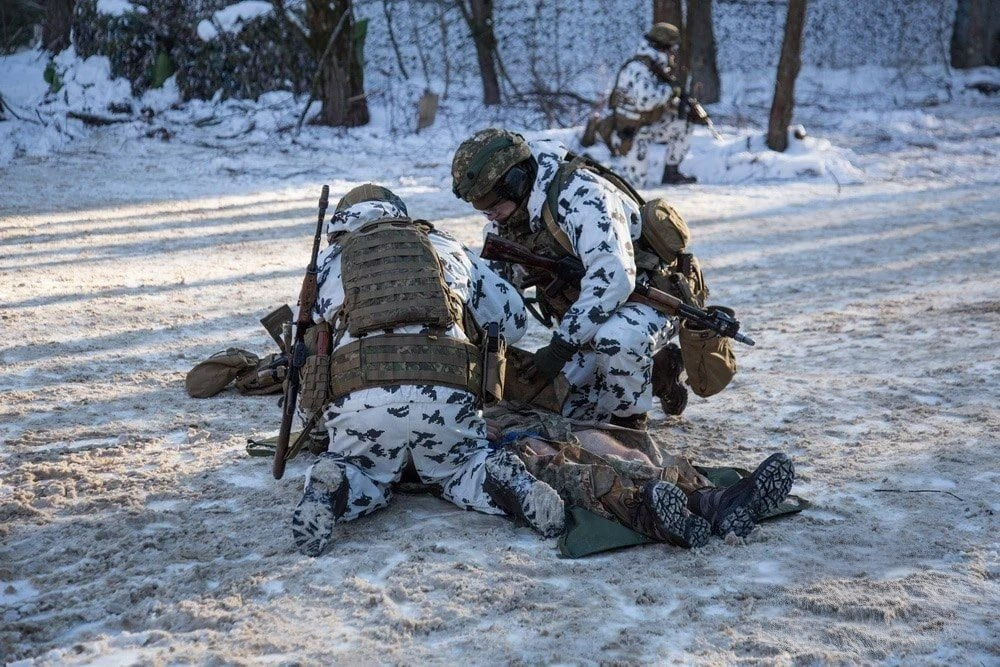

Служба в підрозділі поліції особливого призначення — це стабільність, гідне забезпечення та справжня чоловіча справа.
Від 25 000 грн на місяць + премії за виконані завдання. Виплати вчасно, без затримок. "Біла" зарплата — оформиш кредит без проблем. Якщо показуєш результат, можна виходити на 60-70 тисяч. Хлопці кажуть, що в нас солідніше, ніж на багатьох роботах у Києві.
Офіційне працевлаштування з першого дня. Повний соцпакет: лікування, реабілітація, страховка. У разі поранення — допомога держави + додаткова виплата від підрозділу. Родинам загиблих — підтримка, не кидаємо своїх.
Не "блат" і не знайомства. Старший бійці → командир відділення → заступник командира взводу → командир взводу. Покажеш себе — підвищимо по ділу, а не по знайомству. Реальний приклад — деякі хлопці за рік виросли з рядового до сержанта.
15 днів на службі / 15 днів на міжвахтовий відпочинок
ⓘДва тижні на позиціях, потім два тижні вдома з родиною. Встигаєш і нормально відпочити, і гроші заробити. Буває, затримуємось, коли ситуація гаряча, але потім додаткові вихідні даємо. Хто раніше працював 5/2 — кажуть, що це набагато краще, бо реально відпочиваєш.
Реальний бойовий досвід, якого не дасть жодна цивільна робота. Повага побратимів і друзів. Коли повернешся в звичайне життя — ти будеш людиною, до якої прислухаються. Сім'я пишається. Не кожен може витримати, але хто витримує — стає кращою версією себе.
З документами має бути порядок. Якщо щось не так — допоможемо розібратися, підкажемо, куди звернутися. Без статусу "обмежено придатний" — не вийде, всі проходять перевірку. Як пройдеш — жодних проблем з ТЦК, ми всі питання вирішуємо.

Швидкісна стрільба та відпрацювання роботи в закритих приміщеннях.

Надання першої невідкладної допомоги за протоколом TCCC.